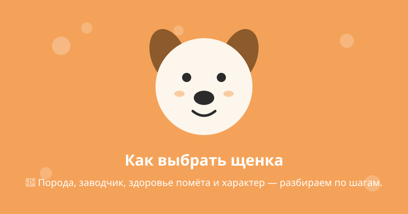
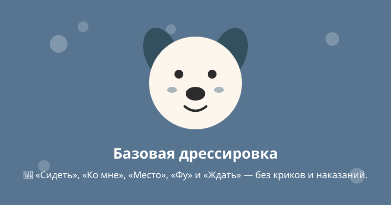
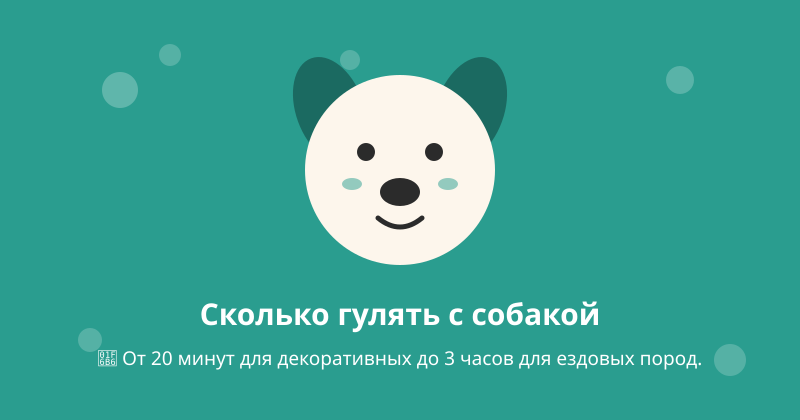
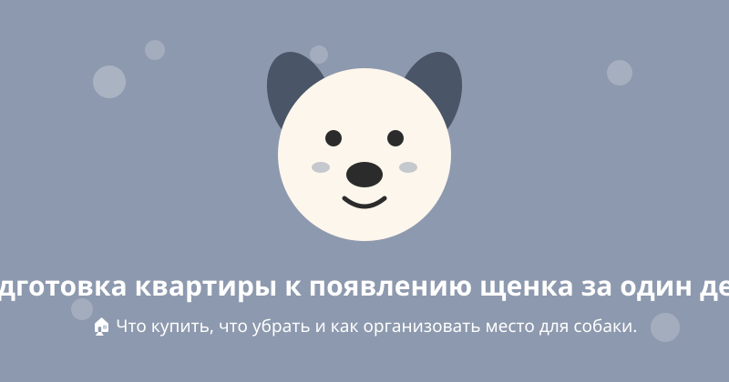

#1 Как выбрать щенка: чек-лист будущего владельца
Порода, заводчик, здоровье помёта и характер — разбираем по шагам.
Читать статью
#2 Чем кормить собаку: сухой корм или натуральная еда
Плюсы и минусы рационов, нормы кормления и запрещённые продукты.
Читать статью
#3 Вакцинация собак: календарь прививок от щенка до взрослой
Какие прививки обязательны, в каком возрасте и как подготовиться.
Читать статью
#4 Базовая дрессировка: 5 команд, которые выучит любая собака
«Сидеть», «Ко мне», «Место», «Фу» и «Ждать» — без криков и наказаний.
Читать статью
#5 Лабрадор-ретривер: характер, плюсы и минусы породы
Кому подходит самая популярная порода мира — честный обзор.
Читать статью
#6 Уход за шерстью собаки: расчёсывание, купание, линька
Частота процедур по типу шерсти — от короткой до длинной.
Читать статью
#7 Здоровье собаки: 10 тревожных признаков, когда бежать к ветеринару
Симптомы, которые нельзя игнорировать и ждать, что пройдут сами.
Читать статью
#8 Сколько гулять с собакой: нормы по породам и возрасту
От 20 минут для декоративных до 3 часов для ездовых пород.
Читать статью
#9 Подготовка квартиры к появлению щенка за один день
Что купить, что убрать и как организовать место для собаки.
Читать статью
#10 Социализация щенка: окно возможностей до 16 недель
Как вырастить собаку, которая не боится людей, звуков и улицы.
Читать статью